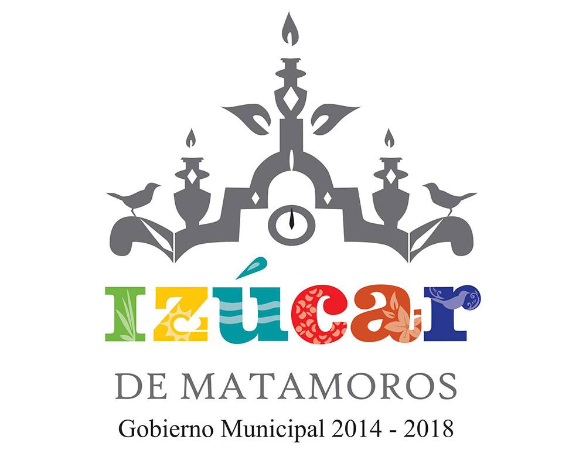

TEMPLOS
TEMPLO "SANTIAGO APOSTOL"
HISTORIA: Santiago el Mayor, cuya imagen es venerada en este santuario de Izúcar de Matamoros, fue uno de los doce apóstoles de Jesucristo. Nació en el poblado de Betsaida, en Galilea y era hijo de Zebedeo y SalomÉ. Tanto su padre como él y su hermano Juan,
eran pescadores en el lago de Tiberiades cuando Jesús los escogió como sus apóstoles. El nombre de esta parroquia de españoles no consta de los libros del archivo parroquial, pero según la tradición y otras fuentes, estuvo en el templo de Santiago. A esta parroquia perteneció el ingenio de San Juan Bautista de Atotonilco, comúnmente llamado Raboso. La escultura fue elaborada por un escultor cuyo origen se desconoce, utilizando maderas de naranjo para la
escultura de Santiago y madera de mamey para la escultura del caballo, ambas de los árboles frutales de los barrios. VISITANOS:
TEMPLO "SANTO DOMINGO DE GUZMÁN"
HISTORIA : El Templo y Ex-convento Dominico, componen una auténtica joya arquitectónica que data del siglo XVI, construido por la orden de
los dominicos, alrededor de 1552 se iniciaron los trabajos de construcción esta fecha se encontraba en el segundo arco de la bóveda de la iglesia después del acceso. Se dedicó al culto en 1612 fecha que podemos ver en la fachada del templo debajo de la ventana del coro, en donde encontramos el escudo dominico, dentro del templo al centro podemos observar el retablo de estilo churrigueresco laminado en oro donde se encuentra la imagen de Santo Domingo de Guzmán, a los lados los Santos Patrones de los barrios, la capilla de la Virgen de la Soledad, la pila bautismal tallada monolíticamente en cantera que por su hermosura y dimensiones causa asombro, tiene un diámetro de 2.27 metros, dentro del ex convento destacan retratos de santos, cardenales, sacerdotes y religiosas de la orden dominica, que debieron ser pintados entre los años de 1630 y 1667 y en especial un claustro ornamentado con arcos de medio punto y bóveda de crucería con nervaduras de estilo gótico, todo un conjunto digno de admirar. En el púlpito de mampostería que se ubica del lado derecho del altar mayor, el 17 de diciembre de 1811 después de oficiar una misa los curas José María Morelos y Pavón y Mariano Antonio Matamoros Guridi, arengaron gente para luchar por la Independencia. VISITANOS
TEMPLO "SANTA MARÍA DE LA ASUNCIÓN"
HISTORIA : Para el año de 1630 los españoles en Izúcar tenían como parroquia el templo de Santiaguito, sin embargo por acuerdo real de Felipe IV, Rey de España, se debían construir parroquias en los pueblos donde hubiera españoles. En diciembre de 1640 se termina la construcción de este bello templo, en el mes de febrero de 1641, el Obispo de Puebla, Juan de Palafox y Mendoza, bendijo dicha parroquia con la advocación de Santa María de la Asunción. A dicha parroquia la denominaron de españoles, ya que era exclusivamente para ellos, en donde se les prohibía la entrada o asistir a actos religiosos a todos los naturales (indios), negros, etc. En el año de 1904 por órdenes del Excelentísimo Arzobispo de Puebla Sr. Don Ramón Ibarra se unen las dos parroquias en Izúcar, la de Santo Domingo de Guzmán y la de Santa
María de la Asunción , quedando abierta a todos los feligreses. La Virgen que se encuentra en el altar mayor, la mando a tallar el Sr. Cura Arturo Márquez
Aguilar en el año de 1944, siendo párroco de Izúcar de Matamoros. VISITENOS:
IR A INICIO